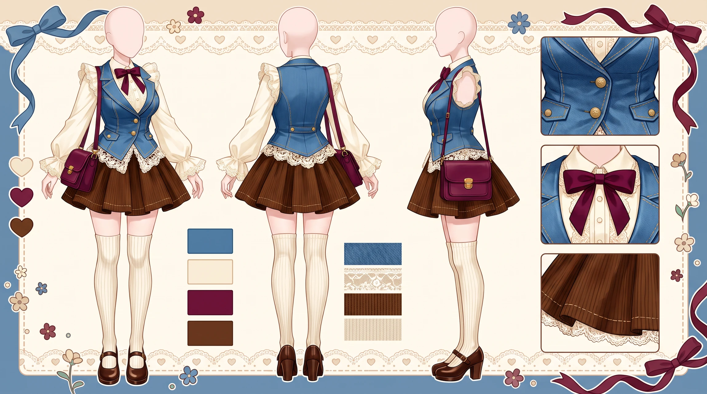
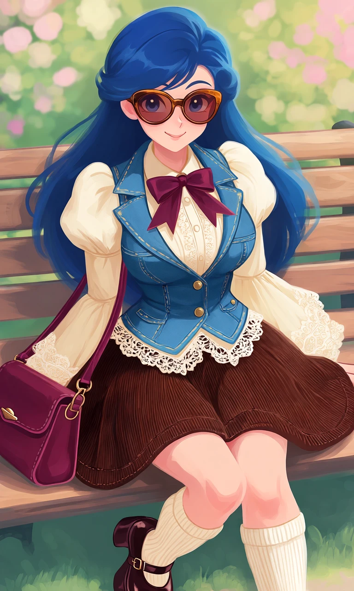
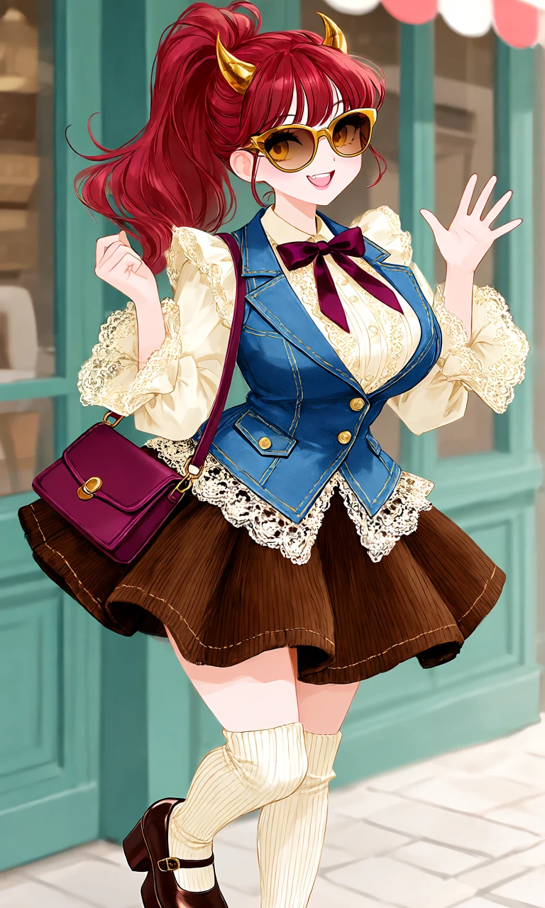

Denim & Daydreams

Outfit Prompt
A charming, feminine vintage-inspired outfit combining warm cream lace, classic blue denim, rich chocolate-brown corduroy, and elegant burgundy accessories.
A warm cream blouse features a pointed shirt collar, a deep V-shaped neckline framed by delicate floral lace ruffles, small cream-colored buttons down the center front, and softly gathered fabric across the bust.
The blouse is worn untucked, with a short, gently flared peplum-style lower hem that rests at the upper hips. Its hem extends approximately two to three inches below the bottom of the denim vest, finished with a beautiful scalloped border of delicate cream floral lace. This creates a narrow, clearly visible cream lace layer between the denim vest and the brown skirt.
The blouse features long sleeves with softly puffed shoulders, gathered fitted sections around the forearms, and dramatic flared bell-shaped cuffs decorated with multiple layers of delicate cream floral lace.
Layered over the blouse is a fitted vintage-blue denim vest with a sleeveless tailored silhouette, deep V-shaped front opening, structured pointed lapels, decorative golden topstitching, and a vertical row of round antique-gold buttons. Two small flap pockets with matching gold buttons decorate the lower front. The vest has a fitted waist and pointed front hem, ending slightly above the blouse's scalloped lace hem.
A large burgundy satin ribbon bow decorates the upper center of the vest, featuring softly structured loops, a neatly wrapped center knot, and two long pointed ribbon tails.
A high-waisted chocolate-brown corduroy mini skirt features a wide structured ribbed waistband and a short, full, circular skater-skirt silhouette. The skirt flares outward from the waist into a rounded, playful shape with generous fabric folds.
The brown corduroy skirt ends at mid-thigh, well above the knees. Its hem is short and evenly rounded, finished with neat stitching. Fine vertical corduroy ribs create soft texture throughout the skirt.
The cream blouse's scalloped lace hem overlaps only the uppermost portion of the brown skirt, leaving the majority of the short chocolate-brown corduroy skirt clearly visible beneath it.
Cream-colored ribbed knee-high socks feature fine vertical ribbing, a soft knitted texture, and comfortable folded cuffs, ending just below the knees.
Glossy dark chocolate-brown Mary Jane platform shoes feature rounded toes, thick platform soles, sturdy block heels, and slender instep straps fastened with small antique-gold buckles.
A small burgundy suede shoulder handbag features a softly structured rectangular silhouette, rounded lower corners, a curved front flap, and a polished gold push-lock clasp. A matching burgundy shoulder strap attaches through decorative gold rings and clasps.
Oversized tortoiseshell cat-eye sunglasses feature elegantly upswept outer corners, warm amber-and-dark-brown patterned frames, and softly graduated brown-tinted lenses.
The complete outfit has a distinctly short, playful silhouette. The fitted blue denim vest ends at the waist, the cream blouse extends just below it with a narrow decorative floral lace hem at the upper hips, and the chocolate-brown corduroy mini skirt flares outward beneath both layers, ending at mid-thigh. The short skirt remains the dominant lower garment, creating a charming vintage-inspired ensemble.
Outfit Examples



